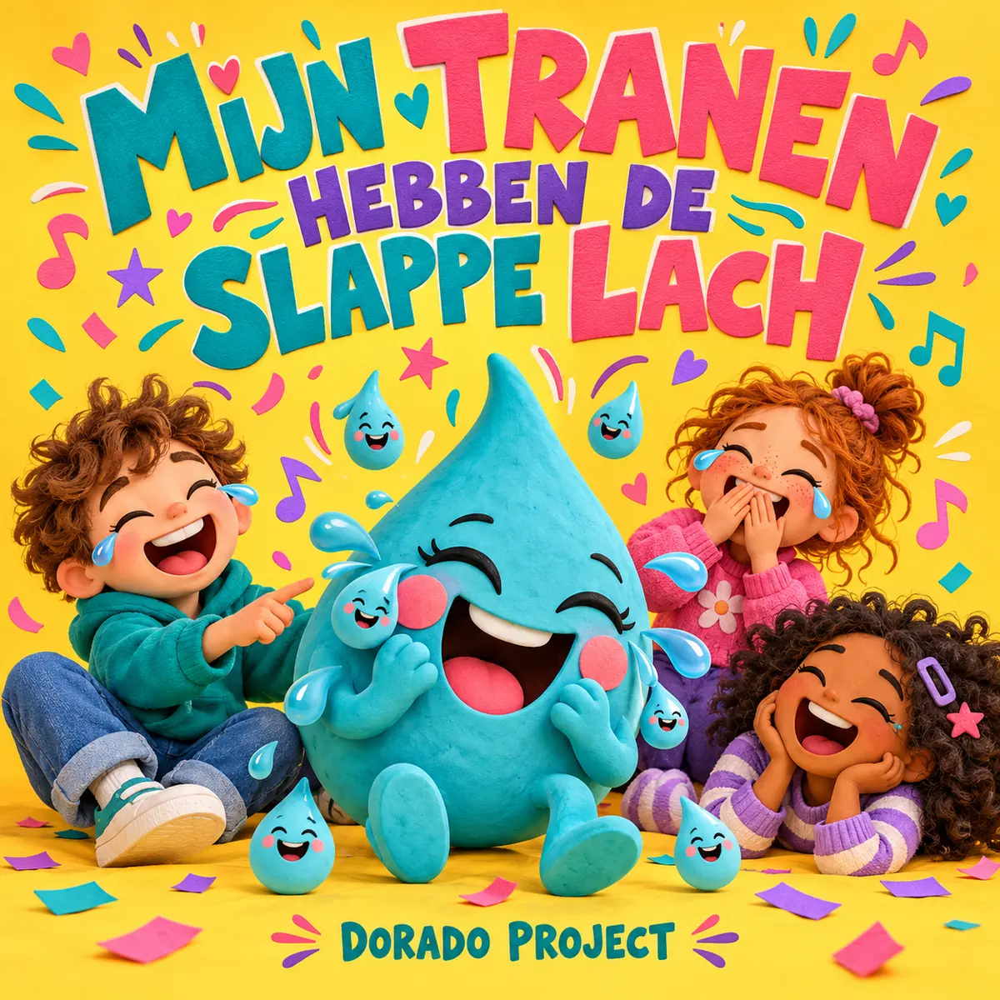

← Alle releases

NIEUWE SINGLE · IN PRODUCTIE
Mijn tranen hebben de slappe lach
Kindermuziek / Nederlandstalige pop
Een vrolijk Nederlandstalig kinderlied vol grappen en een aanstekelijk refrein: “Ik moet huilen van het lachen en lachen van het huilen.” Over de slappe lach, tranen van plezier en samen lachen.
De Spotify-link volgt zodra het nummer daar beschikbaar is.
Van tranen naar de slappe lach
Een vader zoekt zijn telefoon met het lampje van diezelfde telefoon. Een zus laat een koekje verdwijnen — met haar mond vol. En een kind heeft een wel heel slimme vraag over huiswerk. In dit kinderlied volgen herkenbare situaties, ondeugende antwoorden en korte grappen elkaar op. Steeds keert het refrein terug: “Ik moet huilen van het lachen en lachen van het huilen.” Het lied is geschreven voor heldere kinderstemmen, een enthousiast kinderkoor en een zonnige, springerige popbegeleiding met gitaar, piano, marimba en handclaps. Achter alle grappen zit een eenvoudige gedachte: soms lopen lachen en huilen door elkaar, en samen wordt een moeilijke bui weer wat lichter.
Meer van Dorado Project
Van synthpop tot rock: ontdek de andere nummers en het verhaal achter Dorado Project.
Bekijk alle nummers →